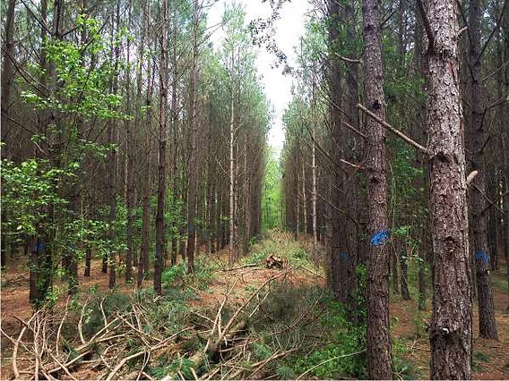
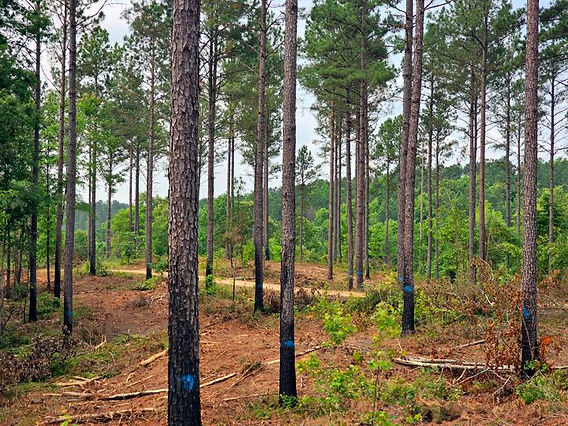
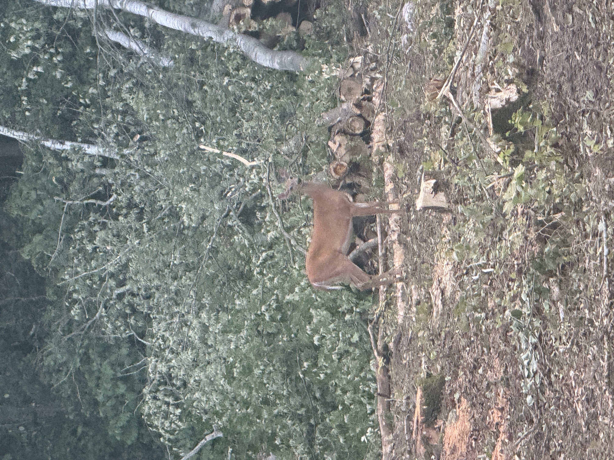
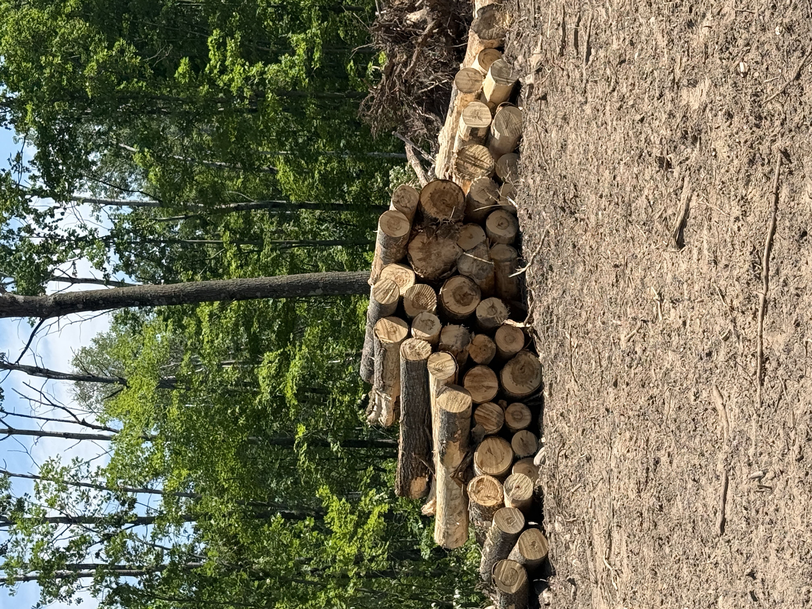
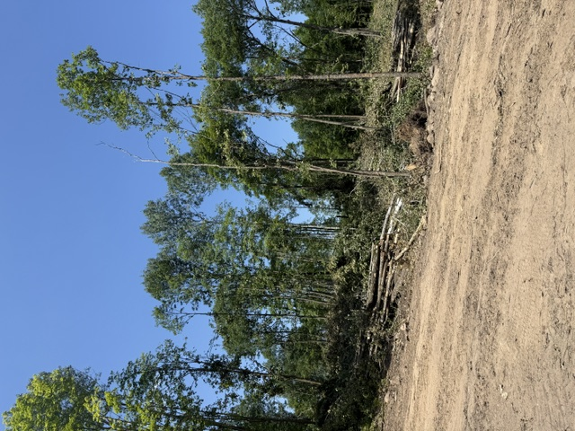
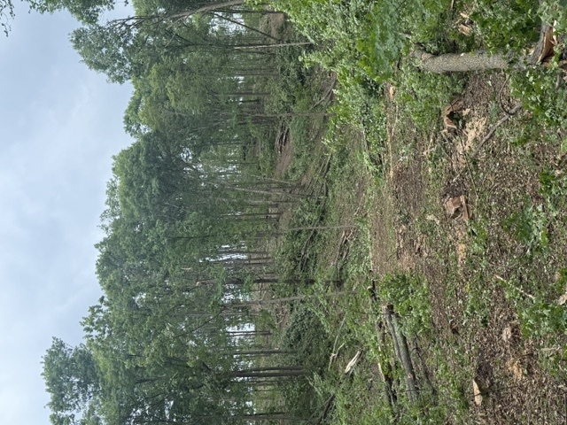
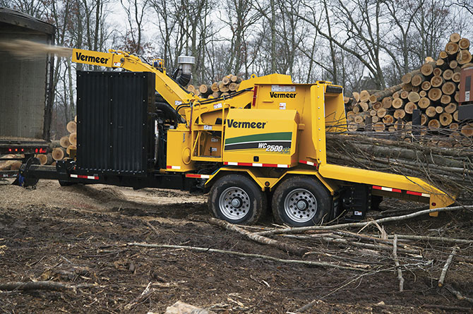

Professional Forestry Services
Forest Management Plans
Custom management recommendations designed around your property's goals and long-term health.
Timber Sale Administration
Professional timber sale planning, marketing, harvesting oversight, and contract administration.
Wildlife Habitat Improvement
Forest management practices that improve habitat, biodiversity, and recreational opportunities.
Timber Appraisals
Accurate timber evaluations to help landowners understand the value of their forest resources.
Property Consultations
Walk your property together and receive practical recommendations with no obligation.
GIS Mapping
Property maps, stand mapping, GPS support, and forestry planning for your woodland.
Recent Forestry Projects










Request a No-Obligation Consultation
Whether you're planning a timber harvest, improving wildlife habitat, or simply want professional advice about your woodland, I'd be happy to walk your property and discuss your goals.
Dailey Forest Management & Consulting
Serving Brainerd, Baxter, Crow Wing County, and surrounding Central Minnesota communities.